RStudio
Working with R – RStudio
RStudio is an Integrated Development Environment (IDE) for R
- It helps the user effectively use R
- Makes things easier
- Is NOT a dropdown statistical tool (such as Stata)
- All R Studio snapshots are taken from http://ayeimanol-r.net/2013/04/21/289/

[source]
RStudio
Easier working with R
- Syntax highlighting, code completion, and smart indentation
- Easily manage multiple working directories and projects
More information
- Workspace browser and data viewer
- Plot history, zooming, and flexible image and file export
- Integrated R help and documentation
- Searchable command history
RStudio

Getting the editor
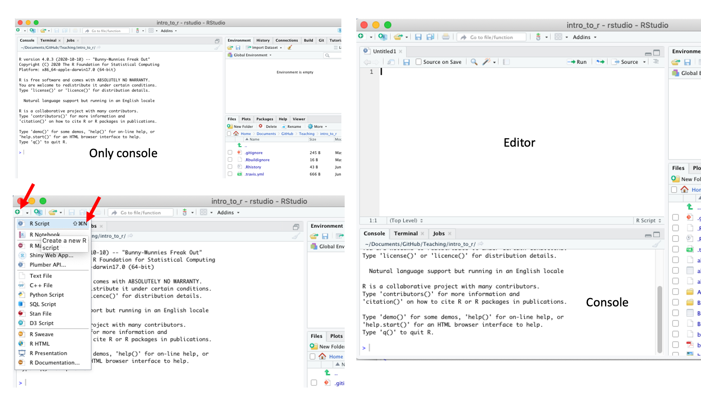
Working with R in R Studio - 2 major panes:
- The Source/Editor: “Analysis” Script + Interactive Exploration
- Static copy of what you did (reproducibility)
- Top by default
- The R Console: “interprets” whatever you type
- Calculator
- Try things out interactively, then add to your editor
- Bottom by default
Source / Editor
- Where files open to
- Have R code and comments in them
- Can highlight and press (CMD+Enter (Mac) or Ctrl+Enter (Windows)) to run the code
In a .R file (we call a script), code is saved on your disk
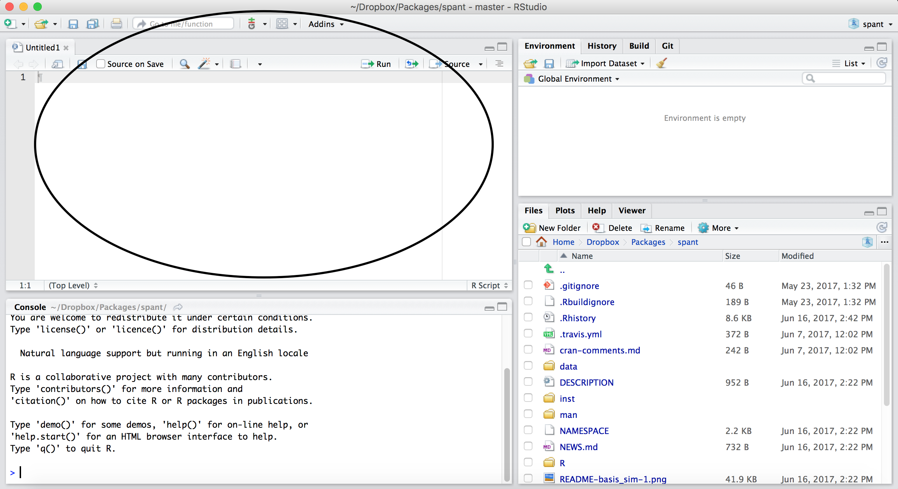
R Console
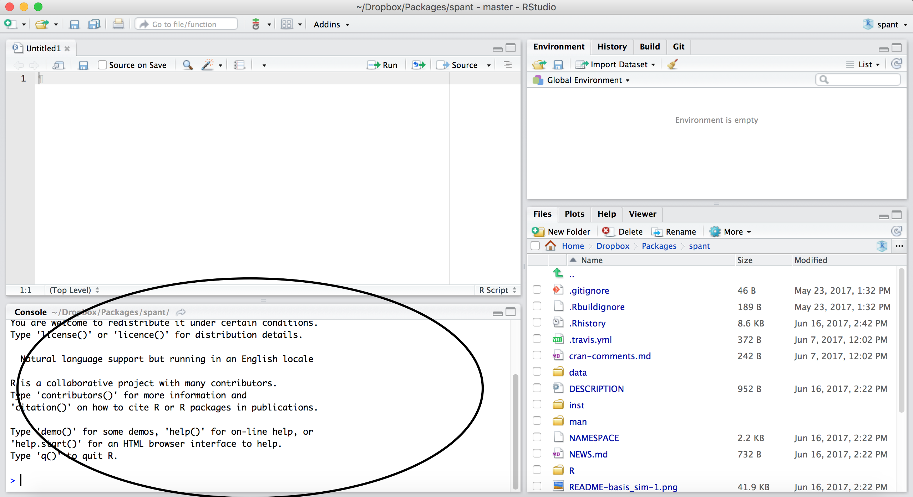
- Where code is executed (where things happen)
- You can type here for things interactively
- Code is not saved on your disk
RStudio
Super useful “cheat sheet”: https://github.com/rstudio/cheatsheets/raw/master/rstudio-ide.pdf
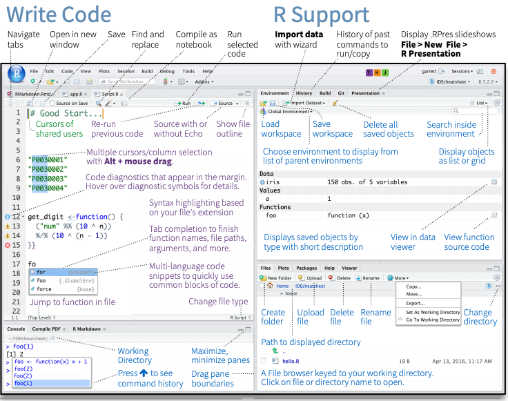
RStudio layout
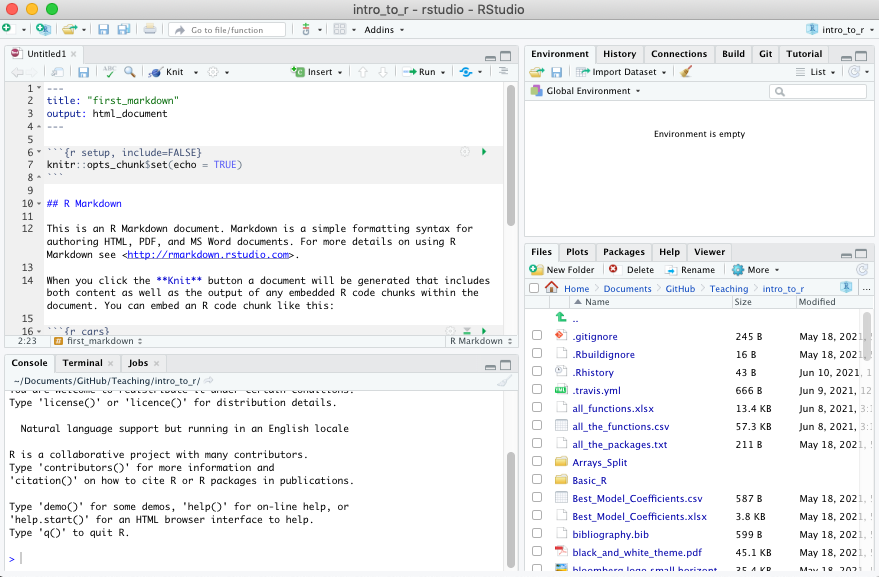
RStudio Layout
If RStudio doesn’t look the way you want (or like our RStudio), then do:
RStudio –> Preferences –> Pane Layout
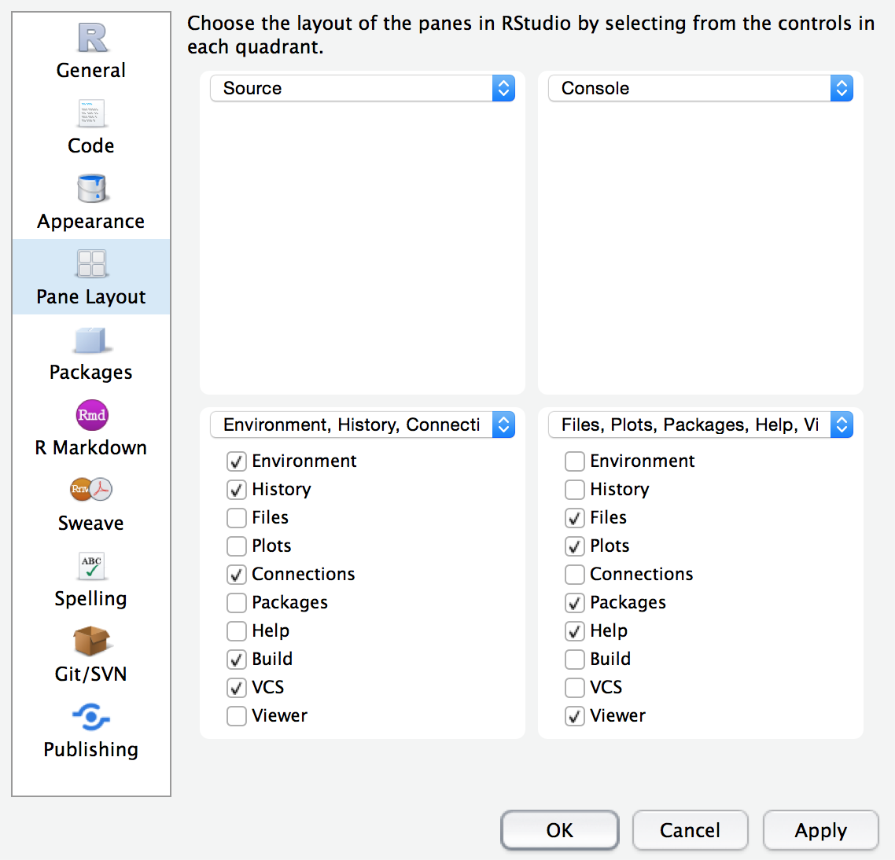
Workspace/Environment
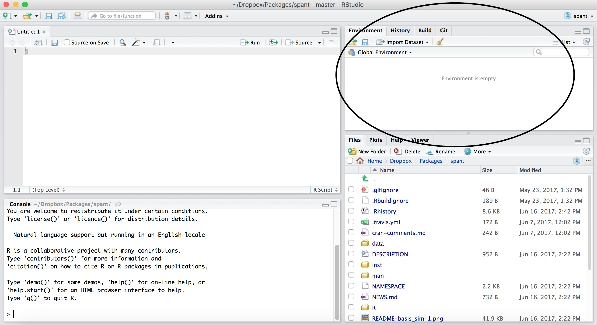
Workspace/Environment
- Tells you what objects are in R
- What exists in memory/what is loaded?/what did I read in?
History
- Shows previous commands. Good to look at for debugging, but don’t rely on it.
Instead use RMarkdown! - Also type the “up” key in the Console to scroll through previous commands
Other Panes
- Files - shows the files on your computer of the directory you are working in
- Viewer - can view data or R objects
- Help - shows help of R commands
- Plots - pictures and figures
- Packages - list of R packages that are loaded in memory
Let’s take a look at R Studio ourselves!
Lab: Starting with R and RMarkdown
To do this lab we need to:
- Download the file at the link above by clicking on the link or typing in:
https://jhudatascience.org/intro_to_r/modules/RStudio/lab/RStudio_Lab.Rmd(Also on the website schedule page - Lab for day 1) - Find the downloaded file on your computer
- Open the file in RStudio
This may require finding your downloads on your computer.
Recall that these videos can help:
If you have a PC: https://youtu.be/we6vwB7DsNU
If you have a Mac: https://www.youtube.com/watch?v=Ao9e0cDzMrE
R Markdown file
R Markdown files (.Rmd) help generate reports that include your code and output. Think of them as fancier scripts.
- Helps you describe your code
- Allows you to check the output
- Can create many different file types
Create an R Markdown file
Go to File → New File → R Markdown
Call your file “first_markdown”
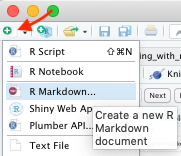
Code chunks
Within R Markdown files are code “chunks”
This is where you can type R code and run it!
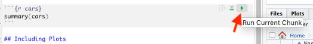
Create Chunks
To create a new R code chunk:
Copy paste an existing chunk in the R Markdown file and replace the code OR
- Use the insert code chunk button at the top of RStudio.
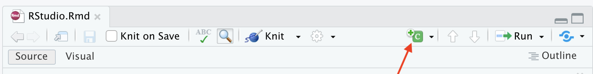
- Select R as the language:
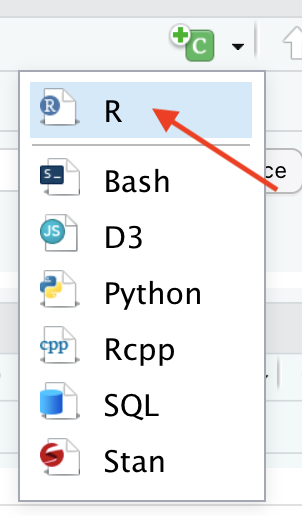
Chunk settings
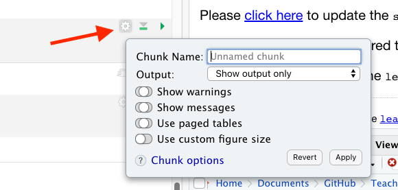
Chunk settings
You can specify if a chunk will be seen in the report or not.
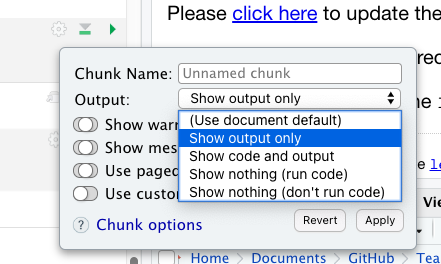
Knit file to html
This will create a report from the R Markdown document!
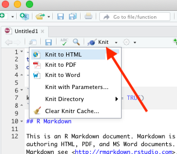
Useful R Studio Shortcuts
Ctrl + Enterin your script evaluates that line of code- It’s like copying and pasting the code into the console for it to run.
Ctrl+1takes you to the script pageCtrl+2takes you to the console- http://www.rstudio.com/ide/docs/using/keyboard_shortcuts
Summary
- RStudio makes working in R easier
- the Editor is for static code like scripts or R Markdown documents
- The console is for testing code
- R markdown documents are really helpful for lots of reasons!
- R code goes within what is called a chunk
- Code chunks can be modified so that they show differently in reports
💻 Lab